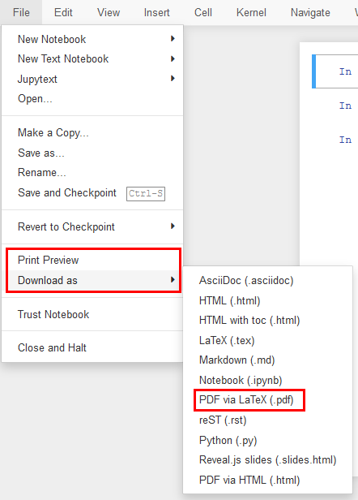

Uvod
Contents
Uvod¶

Tukaj najdete predloge laboratorijskih vaj pri predmetu Procesiranje signalov, ki se izvaja v letnem semestru 1. letnika Magistrskega študijskega programa na Fakulteti za Strojništvo v Ljubljani.
Predloge so pripravljene v obliki interaktivnih Jupyter Notebook dokumentov, katerih izvorna koda je prav tako objavljena in je namenjena pripravi in izvedbi laboratorijskih vaj.
Poseben pomen v predlogah imajo označeni okvirčki, v katerih so zapisne:
Note
Dodatne koristne informacije v zvezi s snovjo.
Naloga
Naloge, ki jih bomo na vajah raziskali skupaj.
Naloga
Naloge, ki jih boste na vajah reševali samostojno.
Preverjanje
Domače naloge in naloge, namenjene preverjanju sodelovanja na vajah.
Domače naloge
Vsebina domačih nalog bo individualizirana, podatke za svojo nalogo najdete v e-učilnici.
V skaldu z naovdilom naloge pripravite kratko poročilo (od 3 do 10 celic s kodo), v katerem najprej povzamete zahteve naloge ter svoje podatke. V poročilo vključite tako kodo rešitve kot kratke komentarje na nalogo (primerna oblika je npr. Jupyter Notebook).
Če iz kakršnegakoli razloga (npr. odsotnost) ustreznih podatkov na vaji niste uspeli pripraviti to v poročilu komentirajte, ustrezne podatke pa v skaldu z navodilom naloge generirate sami (na primer z uporabo scipy.signal).
Dodatek: Za možnost višje ocene sodelovanja na vajah bodite pozorni na predloge razširitve domače naloge.
ODDAJA DOMAČIH NALOG poteka preko e-učilnice.
Rok za oddajo je dan naslednjega predavanja pri predmetu, če ni v nalogi definirano drugače.
Sistem omogoča oddajo več datotek. Če poročilo domače naloge pripravite v programskem okolju (npr. Jupyter Notebook), v e-učilnico oddajte tudi poročilo v .pdf obliki.
Jupyter Notebook datoteko enostavno pretvorite v PDF File -> Print Preview -> Print to PDF.

Kriterij ocenjevanja sprotnega dela
Ocena [%] |
Komentar |
|---|---|
< 70 |
Minimalne zahteve naloge niso izpolnjene / poročilo ni ustrezno oddano. |
(70, 75] |
Osnovne zahteve naloge so izpolnjene s pomanjkljivostmi (npr. neustrezno predstavljeni podatki naloge, nepopolno opremljeni grafi, brez komentarja osnovnih ugotovitev…). |
(75, 80] |
Izpolnjene osnovne zahteve naloge, urejeno poročilo. |
(80, 90] |
Izpolnjene osnovne zahteve naloge, dodatna vsebina s pomanjkljivostmi (npr. pomankljivo interpretirani rezultati…). |
(90, 100] |
Ustrezno uporabljena, predstavljena in interpretirana dodatna vsebina. |
Note
Gre za delo v nastanku, pridržujemo si pravico spremembe vsebine.